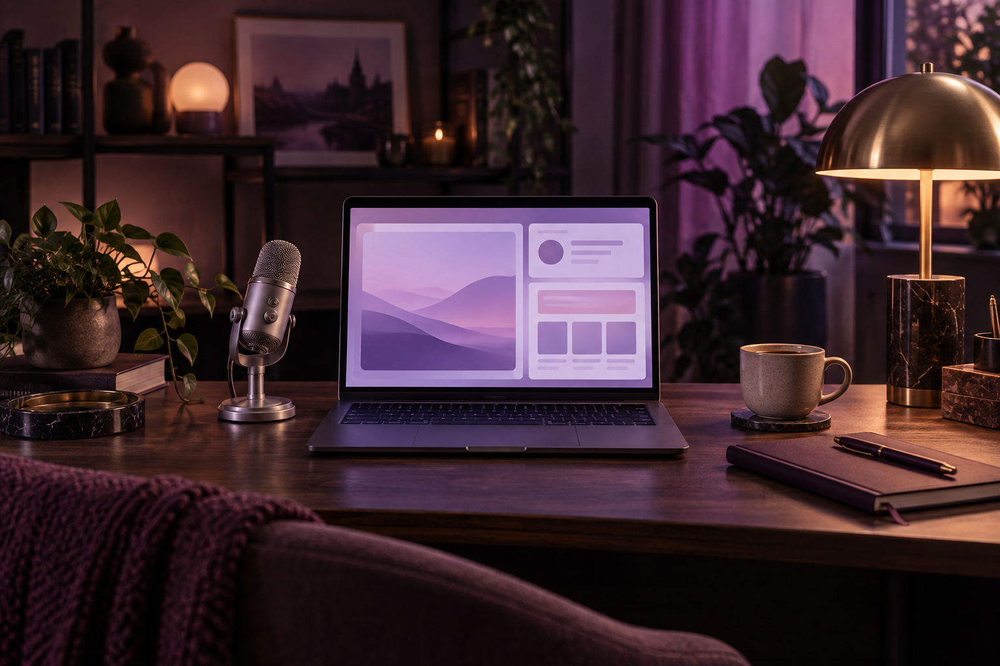
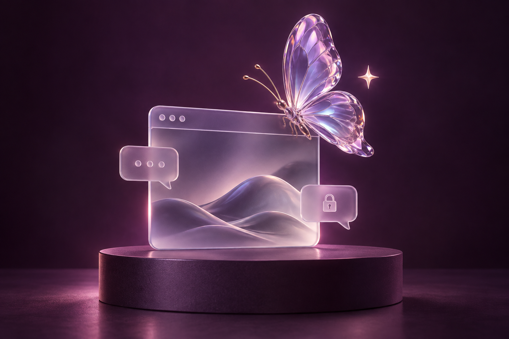

Про OnlyFans —
просто та без стереотипів.
Знайомимося, пояснюємо та допомагаємо дивитися на цифровий світ усвідомлено.

Матеріали про OnlyFans
У вкладці «Матеріали» ви зможете читати статті про OnlyFans: як працює платформа, що варто знати авторам, як дбати про приватність і спілкуватися з аудиторією. Усе — зрозумілою українською, без стереотипів та гучних обіцянок.

Про Піксі Віксі
Піксі Віксі (Pixie Wixie) — українськомовний інформаційний блог про OnlyFans і світ авторського контенту. Тут говоримо про платформу, приватність та взаємодію з аудиторією — зрозуміло, спокійно й без стереотипів.
Застереження
Піксі Віксі — незалежний проєкт, не пов’язаний із OnlyFans. Ми не публікуємо контент 18+ чи анкети моделей. Матеріали мають інформаційний характер і не замінюють індивідуальної юридичної або фінансової консультації.
Наша місія
Допомагати українським авторам орієнтуватися в цифровому середовищі та робити усвідомлений вибір. Ми за доступну інформацію, повагу до особистих меж і реалістичні очікування — без тиску та обіцянок легкого успіху.